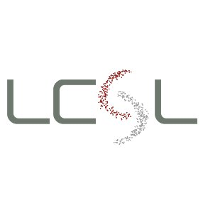

I am currently a post-doctoral researcher in the Laboratory for Computational and Statistical Learning LCSL, working with Silvia Villa and Lorenzo Rosasco. I completed my Ph.D. in the Institut de Mathématiques de Bordeaux ,
under the supervision of Charles Dossal and Jean-François Aujol. My Thesis can be found here. Before that, i did my master studies in the Université Claude Bernard Lyon 1 and the École normale supérieure de Lyon, while my undergraduate studies were completed in the Department of Mathematics of Aristotle University of Thessaloniki in Greece.
My research interests lie in convex analysis, optimization, algorithms, machine learning, dynamical systems and other related topics. In particular one axis of my work is on iterative (implicit) regularization methods for Classification problems (SVM) and in a parallel way I am also interested in different types of inertial gradient-descent type algorithms and their convergence properties for general optimization problems.
Research
Publications and preprints
- V. Apidopoulos, J.-F. Aujol, Ch. Dossal : The Differential Inclusion Modeling FISTA Algorithm and Optimality of Convergence Rate in the Case b<3, SIAM Journal on Optimization, 2018, Vol. 28, No. 1 : pp. 551-574. Preprint available on HAL
- V. Apidopoulos, J.-F. Aujol, Ch. Dossal : Convergence rate of inertial Forward-Backward algorithm beyond Nesterov's rule, Mathematical programming, 2018, https://doi.org/10.1007/s10107-018-1350-9. Preprint available on HAL
- V. Apidopoulos, J.-F. Aujol, Ch. Dossal, A. Rondepierre : Convergence rates of an inertial gradient descent algorithm under growth and flatness conditions, Mathematical programming, 2020, https://doi.org/10.1007/s10107-020-01476-3. Preprint available on HAL
- V. Apidopoulos, N. Ginatta, S. Villa : Convergence rates for the heavy-ball continuous dynamics for non-convex optimization, under Polyak–Łojasiewicz condition, Journal of Global Optimization, 2022, https://rdcu.be/c018q. Preprint available on arXiv
- V. Apidopoulos, C. Molinari, L. Rosasco, S. Villa : Regularization properties of dual subgradient flow, submitted, 2022.
- V. Apidopoulos, T. Poggio, L. Rosasco, S. Villa : Itetrative regularization in classification via hinge loss diagonal descent, submitted, 2022.
Conferences and Schools
- Journées annuelles 2022 du GdR MOA, Nice, October 2022.
- International Conference on Optimization and Decision Science, Firenze, September 2022.
- Séminaire Modélisation, Optimisation, Dynamique XLIM, Limoges, February, 2020.
- Workshop "Variational methods and optimization in imaging" : The mathematics of Imaging, Paris, February 2019.
- CIRM pre-school : The mathematics of Imaging, Marseille, January 2019.
- Journées annuelles 2018 des GdR MOA et MIA, Pau, October 2018.
- Colloque Inter'Actions 18, Lyon, May 2018.
- Ph.D. Students Lambda Seminar, Bordeaux, April 2018.
- Mathematics and Image Analysis (MIA), Berlin, January 2018.
- Journées annuelles 2017 des GdR MOA et MIA, Bordeaux, October 2017.
- Signal Processing with Adaptive Sparse Structured Representations (SPARS), Lisbon, June 2017.
- Workshop CAVALIERI on Optimal Transport and Optimization in Imaging, Paris, October 2016.
- Winter school "Nonlinear Function Spaces in Mathematics and Physical Sciences", Lyon, December 2015.
Teaching
- 2021-2022 : Mathematics for Machine Learning, Practical session (Matlab) 1st year Master students
- 2018-2019 : Introduction to numerical analysis, Theoretical and practical exercises (Scilab), 2nd year Bachelor students
- 2017-2018 : Mathematical bases for sciences, lectures and exercise sessions, 1st year Bachelor students
Other
- President of the Ph.D. students association Lambda (organizing seminars for Ph.D. students in Mathematics, in the Mathematical Institute of Bordeaux)
- Organizer of Colloque Inter'Actions 19 in Bordeaux (an one-week colloquium for Ph.D. students in Mathematics in France)
Contact
- Mail: vassilis(dot)apid(at)gmail(dot)com
- Address: DIMA - Università di Genova, Via Dodecaneso 35, 16146 Genova
- Office: Malga center
- Phone: +39 35 16 50 70 72. 